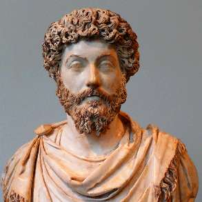

Борис Акунин
Мой календарь
Сегодня день рождения римского императора Марка Аврелия (121 - 180), вероятно, самого необычного среди всех монархов и философов. Только витавший в облаках Платон верил в то, что государством должен управлять профессионал мудрости. История эту гипотезу категорически не подтверждает. От верховного правителя обычно требуются совсем иные качества, прежде всего этическая гибкость и практицизм.
Но есть исключение. Марк Аврелий очень не хотел власти, им владело отвращение к ней - horror imperii («ужас владычества»), но он был адепт стоической школы, которая выше всего ставит исполнение долга. Из мыслителя получился отличный глава государства, при котором Рим процветал. Когда требовалось, Марк Аврелий воевал - неохотно, но умело. Когда требовалось - издавал законы и проводил реформы. Великих целей не ставил, денег на ерунду не тратил, невозможного от людей не требовал.
Свои философские умозаключения император записывал лишь для себя, не пытался поразить современников мудростью. Эти записки так и называются «К самому себе». Там есть настоящие жемчужины мысли. Приведу только две цитаты.
Вот про самое главное человеческое качество и устремление - достоинство: «Не живи так, точно тебе предстоит ещё десять тысяч лет жизни. Уже близок час. Пока живёшь, пока есть возможность, старайся стать достойным».
А вот концепция более сложная: «Ничего не следует делать зря и никогда не следует поступать иначе, как сообразно строгим правилам искусства». Иными словами, человек должен относиться к своей жизни и к своим поступкам так же взыскательно, как художник к искусству. Драгоценная мысль, без преувеличения.
Конечно, когда мудрого императора не стало, в Риме снова началось черт знает что, но философ знает: ничто не вечно под луной и единственное, что ты можешь - прожить свою жизнь достойно (см. цитату-1).
Жить, конечно, нужно, как Марк Аврелий - быть императором своей жизни и при этом философом.